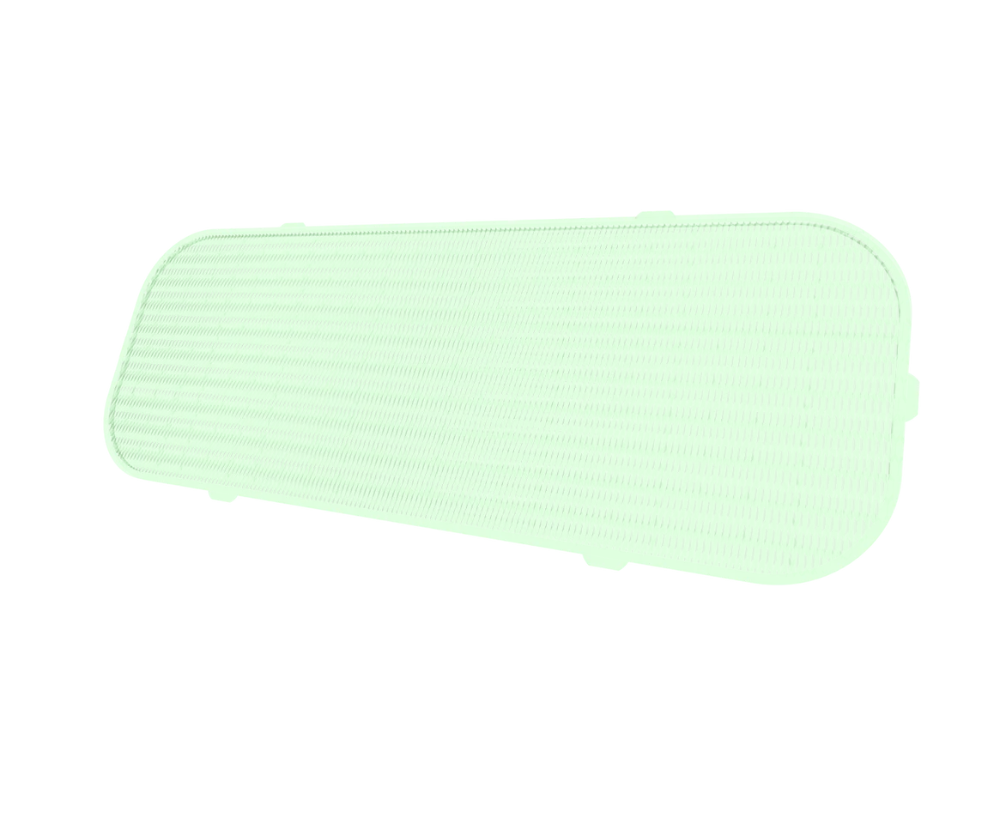
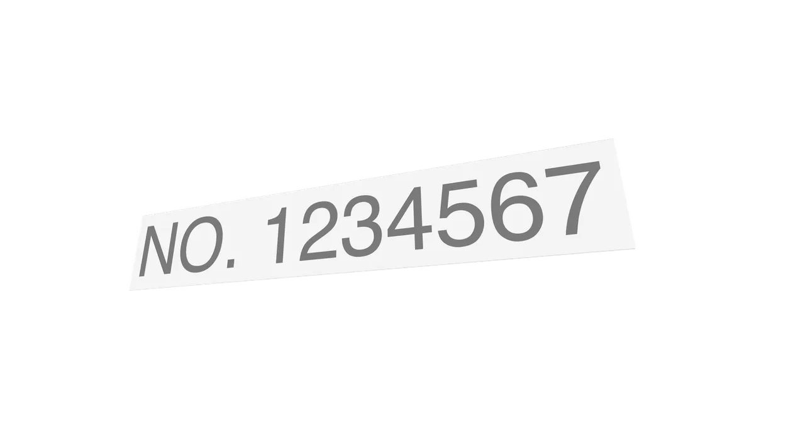
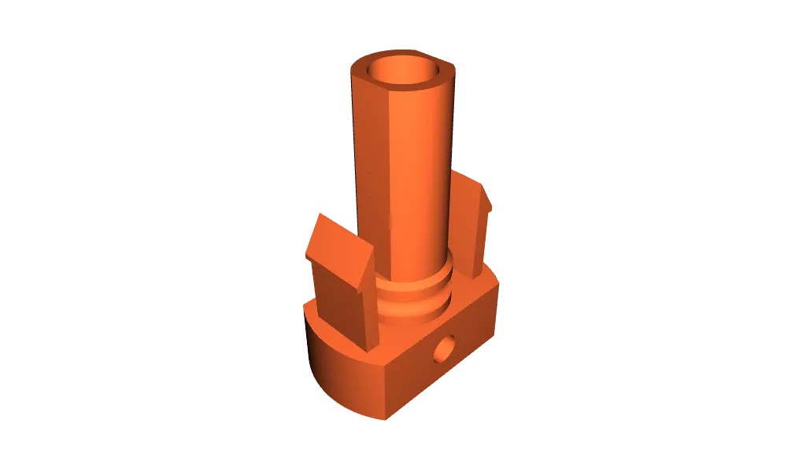
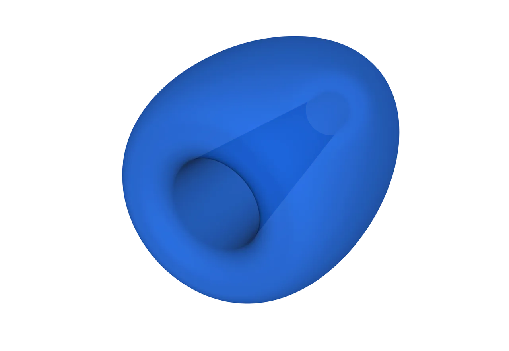
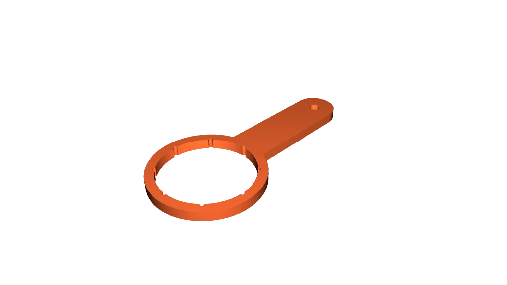
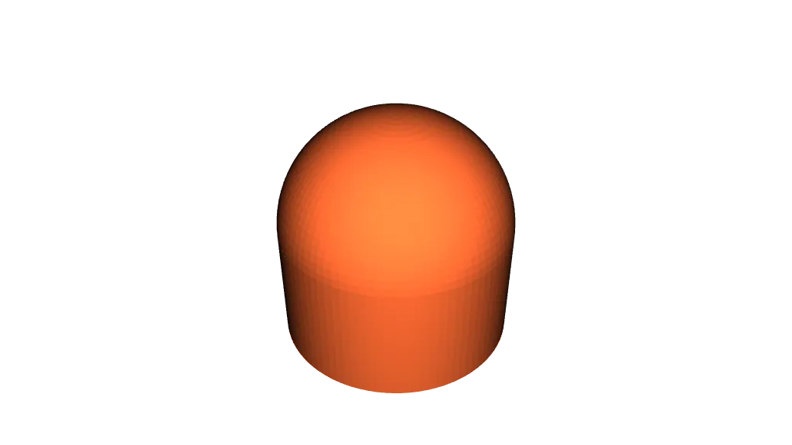
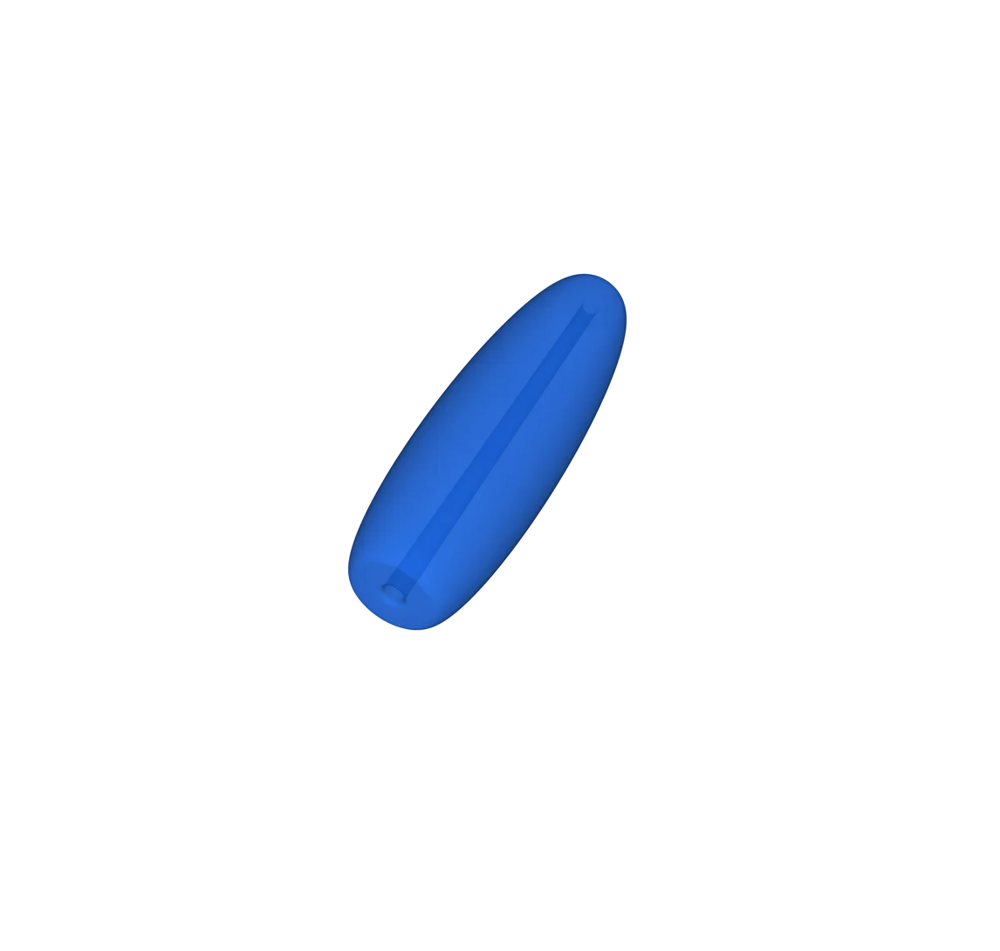
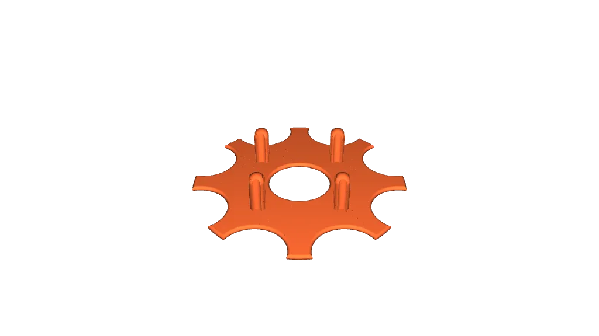

Portlight Flyscreen

Flyscreen for your yacht's portlights. Keeps bugs out, reduces the amount of rainwater that gets in, increases privacy.
Portflight Flyscreen on Printables.com
Vessel Number Placard

United States Coast Guard (USCG) registration number placard for federally-documented vessels
Vessel Number Placard on Printables.com
MC4 Plugs

Moisture and dust caps/plugs for MC4 connectors
Rope Float

Prevents dock lines and rodes from drowning completely if they fall into the water
Water Fiter Housing Wrench

Wrenches of various types to unscrew and tighten housings for water filters.
Water Fiter Housing Wrench on Printables.com
Rope Aglets

Aglets for ropes (docking lines, sheets, running rigging). Prevents chafe, eliminates loose ends, looks neat.
Fishing Bobber

Fishing float
Fishing Bobber on Printables.com
Orbital Sander Disc Aligner

Aligner for orbital sander pads (125/150mm). Helps change discs quickly and match holes nearly perfect for best airflow.
Orbital Sander Disc Aligner on Printables.com
Ahydrodynamic Paddle Blade

Kayak/tender paddle blade that creates extra resistance and drag on both sides for increased performance.
Ahydrodynamic Paddle Blade on Printables.com